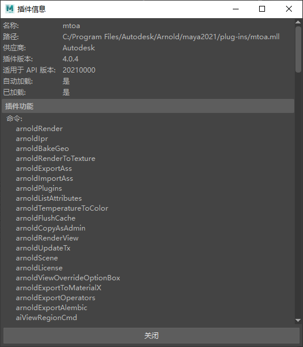

下面列出了可与 MtoA 一起使用的 Mel 命令（及对应的标志）。这些 Mel 命令可以为您节省时间，例如，在 Maya 中用作热键时可加速工作流。
| 命令 | 定义 | 标志 | |
|---|---|---|---|
| arnoldRender | -b -batch | ||
| -cam -camera | 名称 | ||
| -h -height | 无符号整型 | ||
| -ofn -origFileName | 字符串 | ||
| -p -port | 无符号整型 | ||
| -seq -frameSequence | 字符串 | ||
| -srv -saveToRenderView | 字符串 | ||
| -w -width | 无符号整型 | ||
| arnoldIpr | -cam -camera | 名称 | |
| -h -height | 无符号整型 | ||
| -m -mode | 字符串 | ||
| -n -node | 字符串 | ||
| -w -width | 无符号整型 | ||
| arnoldBakeGeo | -f -filename | 字符串 | |
| arnoldExportAss | 将当前场景导出到 .ass 文件。 | -a -asciiAss | |
| -b -batch | |||
| -bb -boundingBox | |||
| -c -compressed | |||
| -cam -camera | 字符串 | ||
| -ef -endFrame | 浮点 | ||
| -ep -expandProcedurals | |||
| -f -filename | 字符串 | ||
| -fp -fullPath | |||
| -fs -frameStep | 浮点 | ||
| -fsh -forceTranslateShadingEngines | |||
| -ll -lightLinks | 无符号整型 | ||
| -m -mask | 无符号整型 | ||
| -o -options | 字符串 | ||
| -pr -exportPrefix | 字符串 | ||
| -s -selected | |||
| -sf -startFrame | 浮点 | ||
| -shg -exportAllShadingGroups | |||
| -sl -shadowLinks | 无符号整型 | ||
| arnoldImportAss | 导入 .ass 文件。 | -f -filename | 字符串 |
| arnoldPlugins | -aov -listAOVs | ||
| -gad -getAttrData | 字符串 | ||
| -gbd -getBuildDate | |||
| -gbi -getBuildID | |||
| -gcv -getClmVersion | |||
| -gev -getExtensionApiVersion | 字符串 | ||
| -las -listAOVShaders | |||
| -lcs -listCustomShapes | |||
| -le -loadExtension | |||
| -llx -listLoadedExtensions | |||
| -lnt -listAOVNodeTypes | |||
| -lop -listOperators | |||
| -lsp -listPlugins | 字符串 | ||
| -lst -listTranslators | 字符串 | ||
| -n -nodePlug | 名称 | ||
| -nt -nodeType | 字符串 | ||
| -sdt -setDefaultTranslator | 字符串 字符串 | ||
| -ule -unloadExtension | 字符串 | ||
| arnoldListAttributes | |||
| arnoldTemperaturetoColor | |||
| arnoldFlushCache | 清除 Arnold 的纹理缓存。 | -fa -flushall | 启用 |
| -q -quads | 启用 | ||
| -s -skydome | 启用 | ||
| -st -selected_textures | 启用 | ||
| -t -textures | 启用 | ||
| arnoldCopyAsAdmin | -f -file | 字符串 | |
| -o -output | 字符串 | ||
| arnoldRenderView | 打开 Arnold 渲染视图窗口 | -cam -camera | 名称 |
| -get -getoption | 字符串 | ||
| -h -height | 无符号整型 | ||
| -m -mode | 字符串 | ||
| -opt -option | 字符串 字符串 | ||
| -r -region | 无符号整型 无符号整型 无符号整型 无符号整型 | ||
| -st -status | 字符串 | ||
| -w -width | 无符号整型 | ||
| arnoldUpdateTx | -f -force | ||
| arnoldScene | -l -list | 字符串 | |
| -m -mode | 字符串 | ||
| -q -query | |||
| arnoldLicense | -cc -copyToClipboard | 字符串 | |
| -gn -getNlmServer | |||
| -gr -getRlmServer | |||
| -rs -runServerStatus | |||
| -sn -setNlmServer | 字符串 | ||
| -sr -setRlmServer | 字符串 | ||
| arnoldViewOverrideOptionBox | -m -mode | 字符串 | |
| arnoldExportToMaterialX | -f -filename | 字符串 | |
| -fp -fullPath | 启用 | ||
| -l -look | 字符串 | ||
| -p -properties | 字符串 | ||
| -r -relative | 启用 | ||
| -s -separator | 字符串 | ||
| arnoldExportOperators | -f -filename | 字符串 | |
| -sel -selection | 启用 | ||
| -shd -shaders | 启用 | ||
| aiViewRegionCmd | -c -create | ||
| -d -delete |